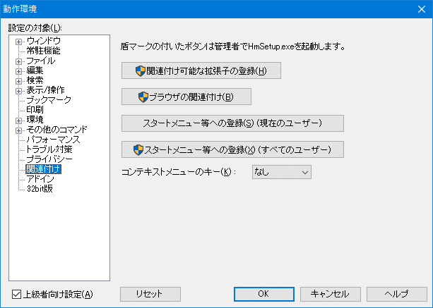

- エクスプローラなどでテキストファイルをダブルクリックしてもメモ帳が起動してしまいます。 秀丸エディタで開くようにしたいのですが？

「その他 → 動作環境」でダイアログを開き、「設定の対象」から「関連付け」を選択すると、 「拡張子の関連付け」ボタンがあります。ボタンを押し、hmsetup.exe を起動して下さい。 (秀丸エディタ本体にあるhmsetup.exeを、直接単体で実行すると、インストーラーが起動してしまいます。)

「追加」を選択し、拡張子「TXT」を入力します。「完了」を押せばテキストファイルと秀丸エディタが関連付けられます。

- [補足説明]
- Windows10の場合は注意が必要です。基本的にはユーザーが既定のプログラムを設定する必要があります。 「コントロールパネル」から「既定のプログラム」から設定/変更が可能です。